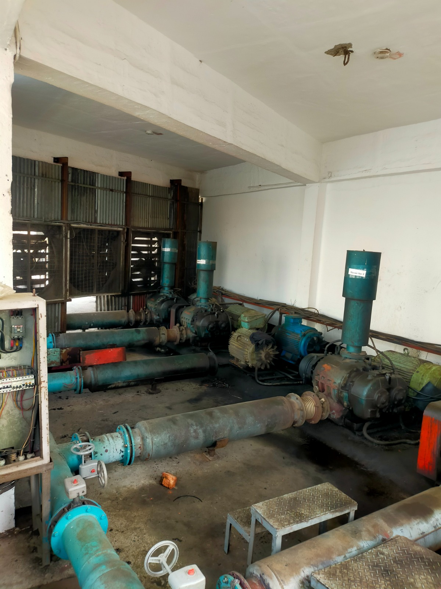

Vision
To be Bangladesh’s most trusted partner for premium cotton yarn and woven fabric — recognized for craftsmanship, consistency, and responsible manufacturing.
Home / About Us
Who We Are
A dedicated cotton woven textile manufacturer serving global buyers from Dhaka and Narayanganj, Bangladesh.


Our Heritage
Founded in Narayanganj, Islam Textile has grown from a modest weaving shed into an integrated mill spanning yarn spinning, woven fabric production, and dyeing & finishing. We focus exclusively on cotton woven textiles — not apparel retail or conglomerate diversification.
Our mission is straightforward: deliver consistent fabric quality, reliable lead times, and transparent communication to buyers who value long-term partnerships.
Guiding Principles
To be Bangladesh’s most trusted partner for premium cotton yarn and woven fabric — recognized for craftsmanship, consistency, and responsible manufacturing.
Deliver export-ready cotton textiles through integrated spinning, weaving, and finishing — with clear communication and dependable lead times for every program.
Our Journey
1990
Founded
Weaving shed established in Narayanganj’s textile belt.
2002
Spinning Added
In-house ring spinning for weaving-grade cotton yarn.
2010
Air-Jet Expansion
Modern loom hall commissioned for export greige capacity.
2016
Dyehouse Online
Reactive dyeing and finishing lines for export-ready fabric.
2024
Global Reach
Serving buyers across 25+ countries from Bangladesh.
Leadership
Our leadership team brings deep textile manufacturing experience across spinning, weaving, and finishing.
Chairman
Steward of Islam Textile’s growth from weaving shed to integrated mill.
Managing Director
Leads commercial strategy, buyer partnerships, and export programs.
Director, Operations
Oversees spinning, weaving, and finishing capacity at Narayanganj.
Director, Quality
Owns laboratory systems, certifications, and pre-dispatch assurance.
Discover our capabilities and request samples for your next collection.